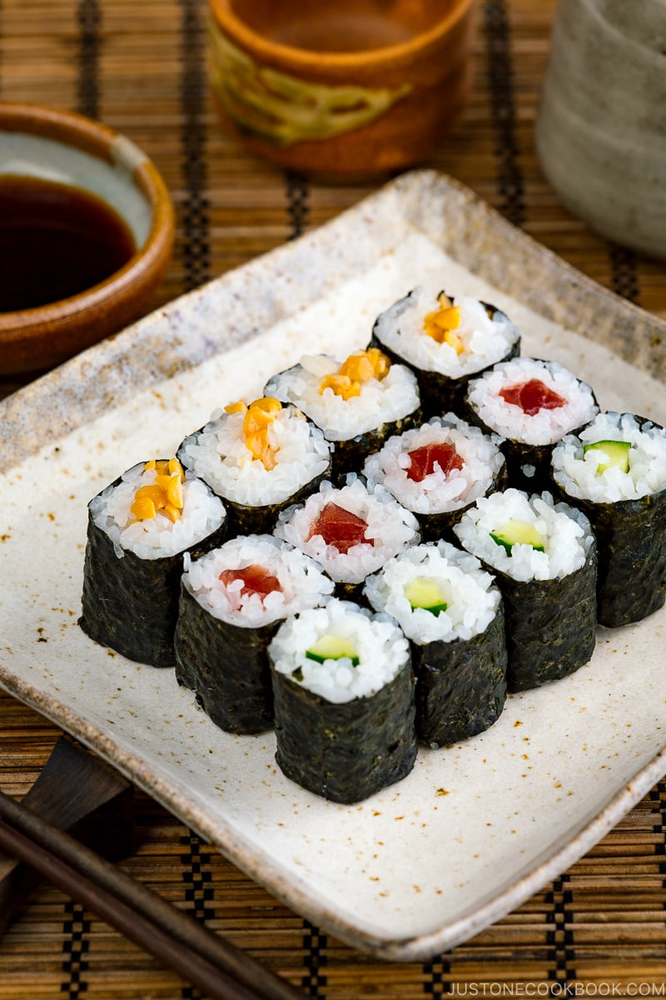

SUSHI

Description
Sushi is a Japanese dish of prepared vinegared rice, usually with some sugar and salt, accompanying a variety of ingredients such as seafood, vegetables, and occasionally tropical fruits. Styles of sushi and its presentation vary widely, but the one key ingredient is "sushi rice", also referred to as shari, or sumeshi.
Ingredients
- 2 cups of sushi rice
- 2 cups of water
- 1/2 cup of rice vinegar
- 1/4 cup of sugar
- 1/2 teaspoon of salt
- 1/2 cup of soy sauce
- 1/4 cup of wasabi
- 1/2 cup of pickled ginger
Steps
- Rinse the rice in a strainer or colander until the water runs clear.
- Combine with water in a medium saucepan.
- Bring to a boil, then reduce the heat to low, cover, and cook for 20 minutes.
- Rice should be tender and water should be absorbed.
- Transfer the rice to a large bowl.
- In a small saucepan, combine the rice vinegar, oil, sugar, and salt.
- Bring to a boil.
- Pour the hot vinegar mixture over the rice and fold the rice using a wooden spoon.
- Allow to cool.
- Use the sushi rice to make sushi.